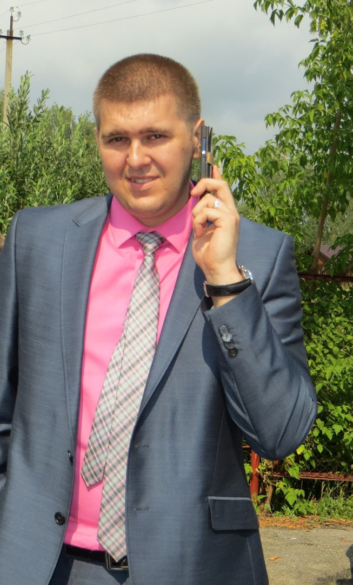
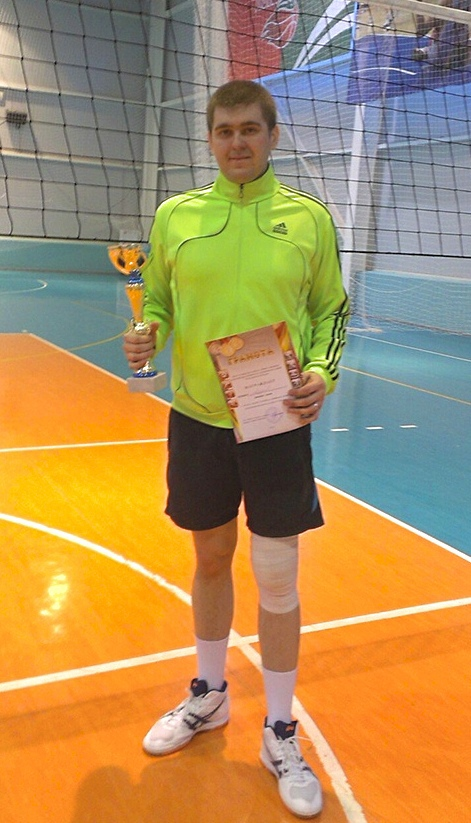
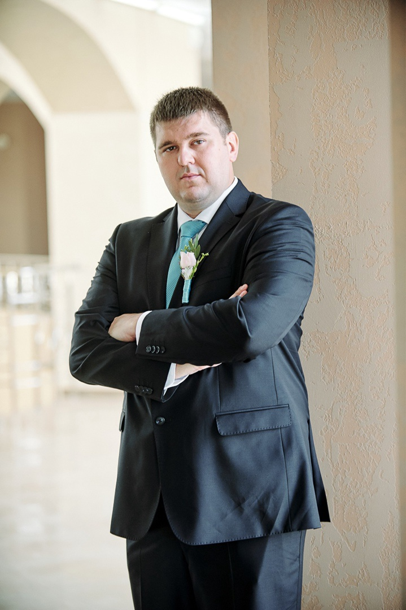
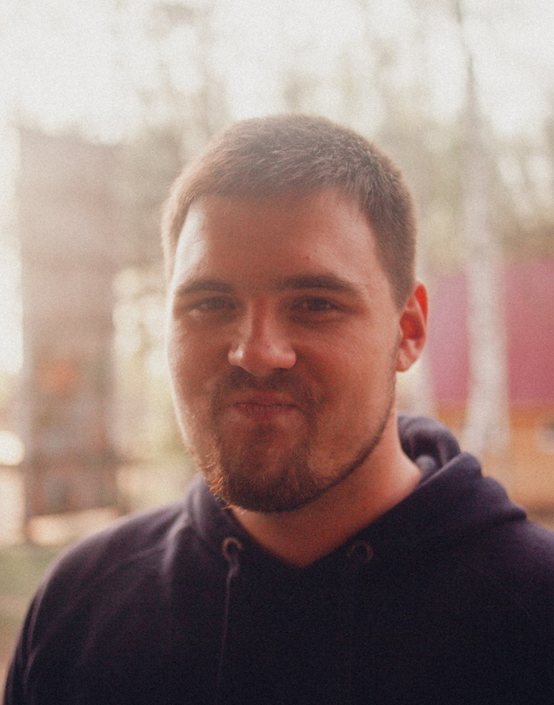
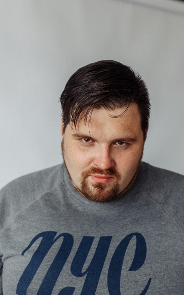
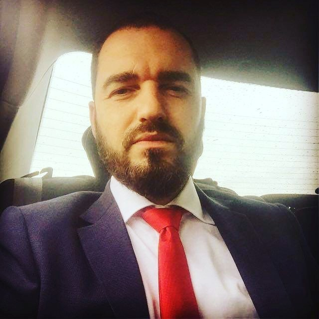
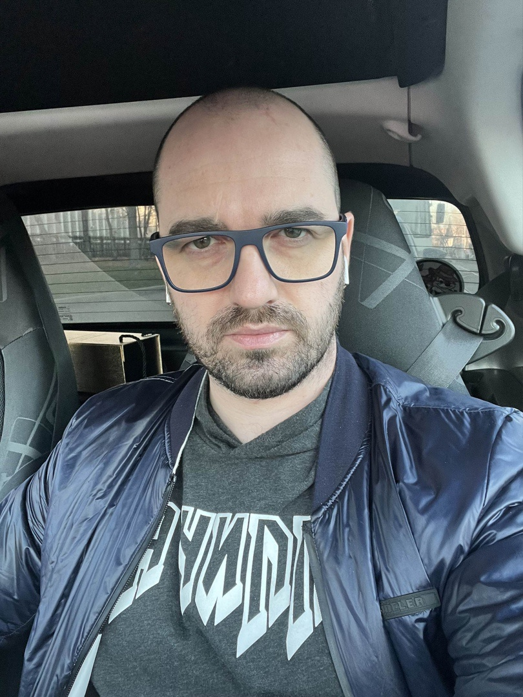
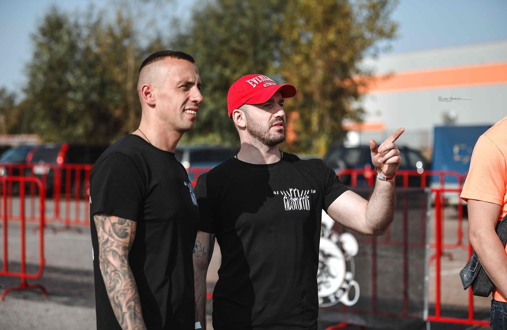

Выпускники 2010 года
И так знакомимся. Выпускник 2010 года Мольков Дмитрий.
Дмитрий в годы учебы по специальности #Информационные_системы, был членом волейбольной команды Нижегородского экономико-технологического колледжа , о которой до сих пор с теплотой вспоминает Александр Федотов.. Родом Дмитрий из р.п.Ардатов.
❗Сразу после окончания учебы в колледже Дмитрий заочно закончил Арзамасский филиал Российского университета потребительский кооперации (направление: Экономика).
❗С 2010 года живет в Нижнем Новгороде.
❗с 2010 по 2014 работал в торговой сети по продаже бытовой электроники Эльдорадо - первые два года продавец, затем заместитель директора.
❗ с 2014 по 2019 ПАО МИНБАНК, должность: системный администратор.
❗ с 2019 по настоящее время ПАО СБЕРБАНК, главный инженер удаленной ИТ поддержки. Обслуживают все отделения сбербанка по России.
❗ И волейбол Дмитрий закончив колледж тоже не бросил. В Нижнем Новгороде играл за ИТ компанию HARMAN



Знакомьтесь: Владимир Юданов выпускник 2010 года. На нашей специальности в колледже была единственная профильная группа школы №7. Уже в 10-11 классе проходило обучение по специальности #Информационные_системы и затем ребята по сокращенной программе заканчивали обучение в колледже.
Владимир учился в данной группе😉!
❗В этом году будет 7 лет, как Владимир работает в Сбербанке. Занимается обслуживанием ПК техники, банкоматов, платежных терминалов и т.д. Должность: старший инженер сервиса технической поддержки💻.
❗А еще у Владимира есть интересные увлечения: графический и моушен дизайн :)
❗ Очень хотим увидеть работы по твоим увлечениям!!!! Ждем в гости!!!!


Итак знакомьтесь: Сергей Балабанов выпускник 2010 года. Выпуск этого года был самый много численный на протяжении всех лет специальности. В тот год выпускались три группы и Сергей был старостой одной из них😉!
❗Сергей имеет только диплом нашего колледжа.
❗ После окончания НЭТК занимался бизнесом. С 2011г в Арзамасе открыл небольшую мастерскую «Цифра» (ремонт и обслуживание мобильной электроники и оргтехники). Мастерская работает и по сегодняшний день. Сергей - владелец мастерской.
❗ с 2016 года Сергей живет в Москве
❗2016-2017 г - советник председателя правления банка «Нефтяной Альянс»
❗2017-2018 г - Помощник депутата Единой России Милонова Виталия Валентиновича
❗ с 2019 по настоящее время:
- учредитель и генеральный директор компании ООО «САНТАЙМ». Компания занимается строительством.
- генеральный директор ООО «Рыбофф и Ко» . Завод по переработке и фасовке рыбы и остальных морепродуктов.
❗ На вопрос про увлечения Сергей говорит:
- Криптовалюта. Это и бизнес и увлечение. Завёл небольшой портфель;
- Автомобили;
- И в зал хожу ещё......


